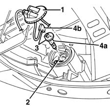
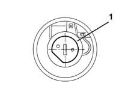
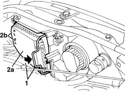
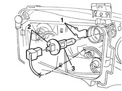
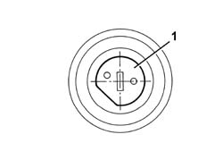

5540D14 L/H OR R/H FOG LAMP BULB (ONE) - R+R
- Path
- Procedures > 55 ELECTRICAL EQUIPMENT > 5540 EXTERIOR LIGHTING > 5540D FOG LAMPS > 5540D14 L/H OR R/H FOG LAMP BULB (ONE) - R+R
- Kind
- repair procedure (removal / refitting; the operation number is the code)
- Applies to
- all engines; all production periods
- Interactive page
- https://sloeber94.github.io/elrnDB-fMltpl/en/#/2891938
Applies to: all engines; production: fino a 05/99, da 09/03, da 06/99 a 03/02, da 04/02 a 08/03, fino a 05/04
 Removing
Removing
 Refitting
Refitting1. Rotate the cover in an anti-clockwise direction and move it slightly.
2. Remove the retaining clip.
3. Extract the bulb.
4. Disconnect the lamp (4a) from the electrical connection (4b).

Applies to: all engines; production: fino a 05/99, da 09/03, da 06/99 a 03/02, da 04/02 a 08/03, fino a 05/04
Refitting
RemovingCheck the efficiency and the cleanliness of the bulb.
Connect the bulb to the electrical connection.
1. Insert the bulb in its housing, positioning it as illustrated in the diagram.

Applies to: all engines; production: fino a 05/99, da 09/03, da 06/99 a 03/02, da 04/02 a 08/03, fino a 05/04
Fasten the retaining clip.
Check the operation of the fog lamp.
Refit the cover and rotate it in a clockwise direction.
Applies to: all engines; production: da 06/04
Removing
Refitting- Open the bonnet.
- Rotate the cover retainer.
- Remove the cover (2a) releasing the retainers (2b).

Applies to: all engines; production: da 06/04
- Release the retaining clips.
- Extract the bulb holder and bulb.
- Extract the bulb from the bulb holder.

Applies to: all engines; production: da 06/04
Refitting
Removing- Check the condition of the bulb and make sure that it is clean.
- Fit the bulb in the bulb holder and fit the bulb holder attaching the retaining clips. The correct position for the bulb is illustrated in the diagram.

Applies to: all engines; production: da 06/04
- Position the cover and attach the retainers.
- Check that the bulb is working.